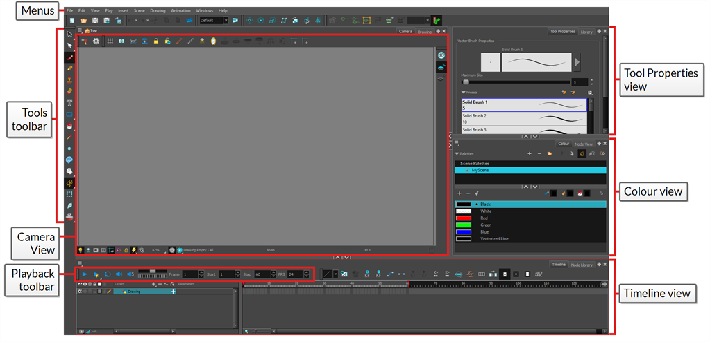
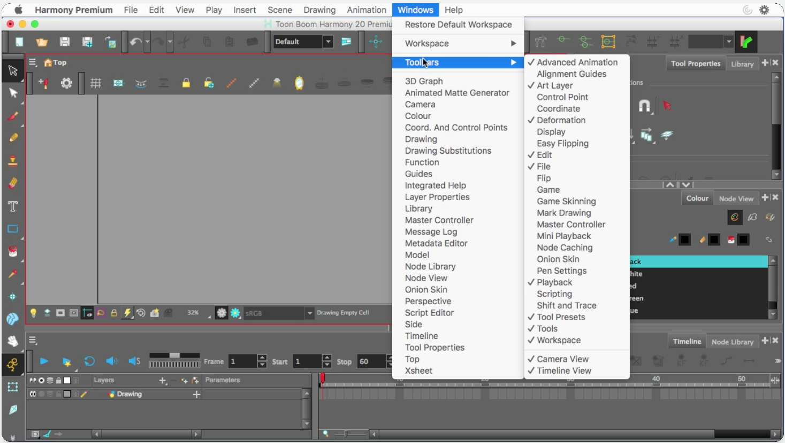
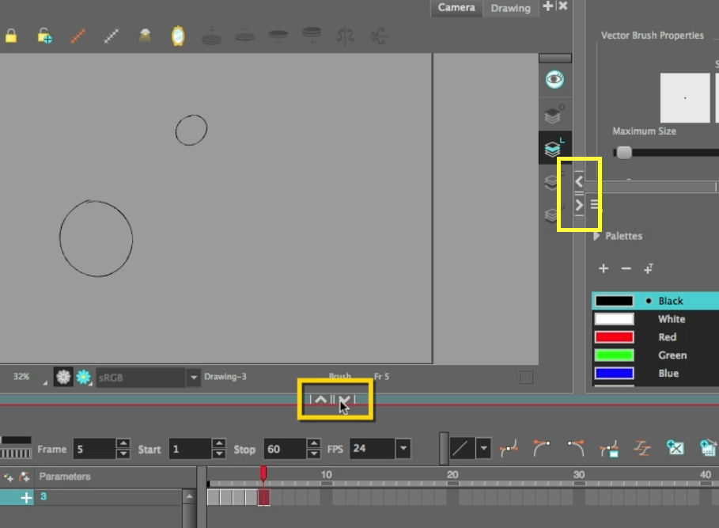
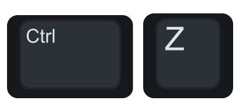

About this Lesson:
Now that we already jumped into Harmony with the Fun with Dots activity, it is time to get more technical by exploring how Harmony is set up and explore some of Harmony Premium’s Preferences to improve your animation experience. The User Interface of Harmony Premium is designed to help any animator by providing useful Toolbars and Views/Windows.
Lesson Duration: 2 hours
Topics
-
Pose to Pose: This Principle of Animation is a technique which includes drawing the key poses first, often the beginning and end drawing of the action and some keys between. Once the key poses are done, the breakdown and inbetween drawings are added to fill the rest of the animation. Actions that require tight timing and structure are often animated with the pose-to-pose technique. This method can result in a slightly stiffer outcome, but is a good way to make sure that volume and structure is maintained in the animation. This method is good for beginners as well, as it gives them a clearer idea of where to take the animation.
-
Key Drawing: A key drawing is a visually significant pose in a movement, often an extreme position. For example, if a character that is sitting down falls on his back, the key poses would be the character sitting and the character on his back. Of course, it may vary from one animation to another.
-
Breakdown Drawing: A breakdown drawing is a pose somewhere between two key poses that better shows the movement. This can be something like an up or down position in a walk, or a significant change in movement that isn't necessarily a key drawing.
Harmony Topics:
-
User Interface: Using Toon Boom Harmony Premium will be significantly easier if you first become familiar with its user interface. When you launch Harmony Premium for the first time, the default workspace is displayed. The workspace is divided into rectangular user interfaces which are referred to as views, each of which has its own specific purpose. The top and left side of the user interface, as well as some views, also contain toolbars, each with specific functions.

-
Toolbars: Harmony's User Interface contains toolbars that quickly give you access to many useful tools. You can add, move and remove toolbars in your workspace. Toolbars are separated in two main categories:
-
Workspace toolbars are toolbars that have a general purpose. For example, the File, Edit, Workspace, Advanced Animation and Deformation toolbars at the top, as well as the Tools toolbar on the left, are workspace toolbars. Those toolbars can be placed at the top, bottom, left or right edge of the application window. They can also be placed at the edge of specific views if preferred.
-
View toolbars are toolbars that are useful for a specific view. For example, the Camera view has a Camera toolbar at its top. View toolbars can only be displayed inside their respective view. They can be placed at the top, bottom, left or right edge of their view.
-

-
Views: Views are small user interfaces that each have a specific purpose. They can be added to the main application window, in which case they are “docked”, or can be opened as separate windows. Each view has a tab on top of it which contains its name. Not only can this be used to identify the views you’re working with, but tabs also allow you to stack several views in the same area of the user interface. For example, in the default workspace, most of the area is occupied by the Camera view. At the top of the camera view are two tabs, one that says Camera and the other that says Drawing. This is because the Drawing view is stacked with the Camera view, and you can quickly switch between both by clicking on either tab.
-
Expand/Contract User Interface components: Allows you to increase, decrease, display or hide Views

- Preferences: An important feature of Toon Boom Harmony Premium is the Preferences dialog box. From here you can customize the behaviour of various user interface elements, as well as drawing and animation tools, and enable or disable advanced features.
- Workspaces: The Harmony interface is composed of several views. You can customize your workspace to suit your working style, save it as a new workspace, and load it from the Workspace toolbar. You can restore modified workspaces to their original layout by selecting Windows/Restore Default Workspace in the main menu.
Shortcuts introduced in this Lesson:
- CMD+Z (macOS)
 or CTRL+Z (Windows)
or CTRL+Z (Windows) 
= undo step
Task:
Step 1:- Begin by watching and taking notes on Interface & Preferences video (above) and the topics presented in this lesson. Review the Intro to Toolbars & Views in Harmony presentation (below). Just a reminder that keeping updated notes will help you prepare for your certification exam at the end of this course. Try to become comfortable with the Harmony User Interface.
- Enable the following Preferences in your version of Harmony:
- Auto-Save (not shown in the video). This can be enabled in Preferences/General/ Auto-Save
- Focus on Mouse Enter
- Default Separate Position for Pegs
- Stop Motion Keyframes
- Double click on a Node to open the Editor
- Drawing Creation/disable Extend Exposure of Previous Drawing
- Brush Size Cursor
- Support Overlay Art and Underlay Art
- Synchronize Eraser and Brush
- Animate and complete a simple Pose to Pose blob animation presented in the Interface & Preferences video (9:00 time mark) using the Pose to Pose technique.
- Your animation should be 5 frames long
- Draw Key Drawing of a Blob on frame 1
- Enable the Onion Skin tool to see your drawing on frame 1
- Draw Key Drawing of 2 smaller Blobs on frame 5
- Select Stop on your timeline
- Draw the two blobs connecting on frame 3
- Draw a breakdown drawing of the blobs trying to connect on frame 2
- Draw a breakdown drawing of the blobs trying to connect on frame 4
- Add a Colour Card
- Save your Harmony file as: YourName_Blob.xstage in your Documents folder.
- Export your Harmony file as: YourName_Blob.gif in your Documents folder.
- Review the Assessment rubric in the Lesson Files.
- Please submit your animated video using the Submit File section on the bottom of this page.
- Complete the Harmony User Interface & Preferences Quiz (below).
Congrats, you are one step closer to becoming an animator!